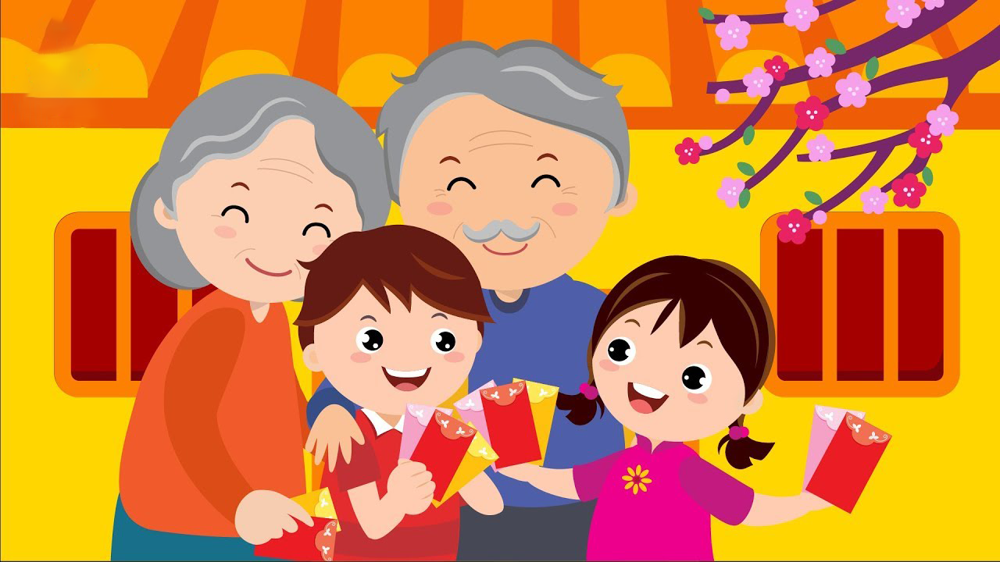

Một năm bận rộn sắp đi qua, không khí Tết đang tràn ngập trên mọi nẻo đường. Đây có lẽ là dịp lễ đặc biệt nhất trong năm, là lúc mà mọi người tất bật chuẩn bị dọn dẹp nhà cửa, trang trí để chào đón năm mới. Mọi năm khi tới dịp này, có lẽ chúng ta thường nhớ ra phải mua gì, cần chuẩn bị gì thì mới bắt tay vào chuẩn bị đúng không nào? Vậy đây là lúc chúng ta cần lên kế hoạch chuẩn bị những thứ cần làm để có một cái Tết thật trọn vẹn và ý nghĩa.
Dọn dẹp và trang trí nhà cửa
Đây có phải là điều đầu tiên bạn nghĩ tới không? Chuẩn bị cho nhà cửa sạch sẽ và trang hoàng trước thềm năm mới là điều mỗi gia đình đều làm, giúp mang lại nhiều may mắn và tài lộc. Sắp xếp đồ đạc, lau chùi những bộ bàn ghế rồng phượng có thể là nỗi sợ của các bạn nhỏ, nhưng mỗi năm chúng ta chỉ có một ngày “Lễ dọn nhà” lớn như vậy thôi, hãy dọn dẹp với một tâm thế vui vẻ nhé!
Bên cạnh việc dọn dẹp, chúng ta cần trang trí cho ngôi nhà thêm lộng lẫy. “Miền nam có Mai, miền Bắc có Đào”, một cái tết truyền thống có lẽ sẽ không trọn vẹn nếu thiếu đi sắc hồng của đào và ánh vàng cành mai, hãy chuẩn bị sắm một cành đào hoặc mai phù hợp với không gian của gia đình. Ngoài ra, hãy chuẩn bị cắm một bình hoa ở phòng khách và có thể treo thêm đèn lồng ở sân nếu có không gian, giúp ngôi nhà sẽ ấm cúng hơn đó.
Làm bánh chưng
Bánh chưng, bánh tét là loại bánh không thể thiếu trong mỗi dịp tết, làm nên hương vị của một cái tết truyền thống, đưa mọi người lại gần nhau hơn. Sẽ thực sự ý nghĩa nếu gia đình chúng ta cùng quây quần làm bánh, có thể gói đẹp, gói xấu, nhưng đây sẽ là một kỷ niệm, một hình ảnh quây quần, không khí ấm cúng khi cùng nhau gói bánh và trò chuyện.
Hãy chuẩn bị thêm vài củ khoai để bỏ lò nướng khi đun củi bánh nhé! Đêm trông nồi bánh chưng mà thưởng thức củ khoai nóng hổi nữa sẽ rất tuyệt, là khoảnh khắc mà chúng ta sẽ nhớ mãi.

Mua sắm
Việc lên kế hoạch những thứ cần mua trước khi đi chợ Tết là một điều cần thiết. Đối với công việc nội trợ, thật không mấy thoải mái nếu chúng ta quên mua một vài thứ gì đó, mỗi khi về tới nhà mới sực nhớ ra và phải chạy xe đi mua thêm, cộng thêm việc phải bon chen khu chợ đông người nữa sẽ khá bực mình phải không?
Hãy viết ra những thứ cần phải mua trước khi đi chợ, đối với những loại đồ khô như mộc nhĩ, nấm hương, các loại gia vị,… chúng ta có thể mua trước khi sát tết. Viết ra các thực phẩm và vật dụng, đặc biệt chú ý “nhớ mang theo tờ giấy đã ghi chép khi đi chợ nhé”.
Quà tết
Đừng quên chuẩn bị những món quà Tết ý nghĩa để gửi tặng những người thân yêu, bày tỏ sự biết ơn và sự quan tâm tới những người chúng ta yêu quý. Đôi khi đó không phải là món quà mang giá trị vật chất, mà còn mang nhiều ý nghĩa về tinh thần, kèm theo những lời hỏi han, lời chúc mừng năm mới.
Đặc biệt trong một năm dịch bệnh khó khăn như vậy, với những đứa con xa nhà, có lẽ sự trở về của chúng ta sẽ là món quà lớn nhất đối với cha mẹ và những người thân yêu. Giây phút được đoàn tụ, con cháu sum vầy là món quà tinh thần lớn nhất mà bất cứ ba mẹ nào cũng mong muốn.
Làm đẹp
Chắc hẳn đây là sự chuẩn bị “yêu bản thân” nhất đúng không nào? Sắp sửa bước sang một năm mới, hãy chuẩn bị cho mình một một diện mạo mới, có thể là một vài bộ độ mới, một mái tóc cá tính hơn hay một vài phụ kiện yêu thích. Quan trọng hơn cả, sự chuẩn bị cho bản thân sẽ làm chúng ta tự tin hơn, sẵn sàng chào đón một cái Tết hân hoan, đón chào mùa Xuân trọn vẹn và đầy đủ nhất.
Sức khỏe
Hẳn đây là một sự chuẩn bị khá khác phải không? Với một năm dịch bệnh kinh hoàng, đau thương có, mất mát có, vì vậy hãy chuẩn bị cho mình một sức khỏe tốt, dù là đi đâu về đâu, hãy tuân thủ theo quy định phòng chống dịch, trước hết là bảo vệ cho mình, sau là bảo vệ cho gia đình và cộng đồng bạn nhé! Có một cơ thể khỏe mạnh, một sức khỏe tốt là sự chuẩn bị tuyệt vời để chào đón một cái tết trọn vẹn và ý nghĩa.